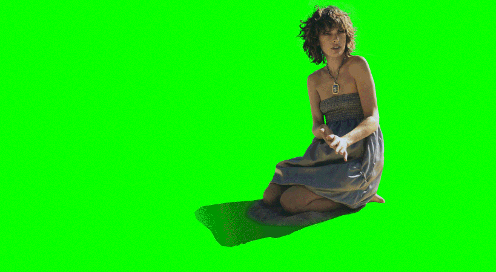
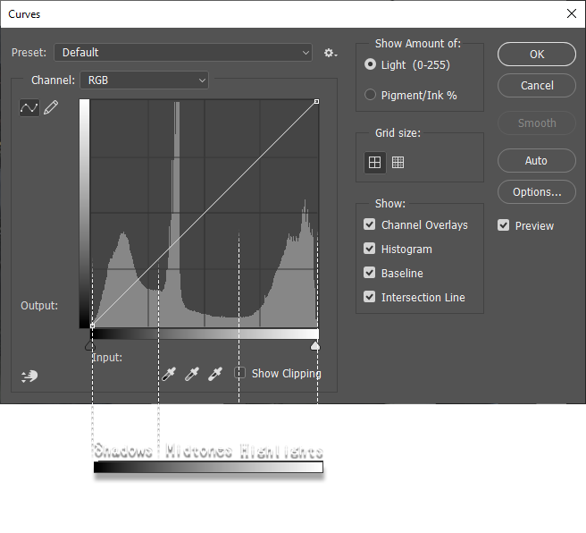

Welcome - Resources - Tools - The Cowboy Trick - Vanishing Point - Post Processing

Post processing
What is post processing?
The term post-processing is used in the video/film business for quality-improvement image processing methods used in video playback devices, and video players software and transcoding software. It is also commonly used in real-time 3D rendering to add additional effects. Video post-processing is the process of changing the perceived quality of a video on playback (done after the decoding process). Image scaling routines such as linear interpolation, bilinear interpolation, or cubic interpolation can for example be performed when increasing the size of images; this involves either subsampling (reducing or shrinking an image) or zooming (enlarging an image). This helps reduce or hide image artifacts and flaws in the original film material. It is important to understand that post-processing always involves a trade-off between speed, smoothness and sharpness.
In this image, I use many layers on top of the image such as specks of dirt, replicating film grain, scratches, color grading, and a VHS effect. This can be achieved through many ways but in this tutorial, I will show the easiest way to do so.
Film Grain
Film grain or granularity is the random optical texture of processed photographic film due to the presence of small particles of a metallic silver, or dye clouds, developed from silver halide that have received enough photons. While film grain is a function of such particles (or dye clouds) it is not the same thing as such. It is an optical effect, the magnitude of which (amount of grain) depends on both the film stock and the definition at which it is observed. It can be objectionably noticeable in an over-enlarged film photograph.
This is possible in most art programs. To achieve this effect, you should create a layer that is 50% grey. If possible, set the blending mode of the layer to be "Overlay." Then, you add noise.
| Program | Recommended Amount of Noise |
|---|---|
| Photoshop | 0.2% - 0.6% with 0.2px - 0.8px gaussian blur |
| Nik Collection | 400px - 500px |
| GIMP 2.0 | 15% with 0.2px - 0.5px gaussian blur |
| Clip Studio Paint PRO/EX | 13 scale, 1.42 Amplitude, Offset X: 530px Offset Y: 230px with 0.2px - 0.8px gaussian blur |
Now mixing this noise, you use gaussian blur. In some programs, it is not needed as it is automatic to use blur as some programs have variables set to your choice. The table above should show the recommended amount of blur that you should use. After creating one layer of film grain, copy and paste it. Move the second layer around and set its blending mode to overlay too. Now, you have a film grain that can be adjusted at anytime.
Color Grading

Color grading is the process of improving the appearance of an image for presentation in different environments on different devices. Various attributes of an image such as contrast, color, saturation, detail, black level, and white point may be enhanced whether for motion pictures, videos, or still images. Color grading and color correction are often used synonymously as terms for this process and can include the generation of artistic color effects through creative blending and compositing of different images. Color grading is generally now performed in a digital process either in a controlled environment such as a color suite, or in any location where a computer can be used in dim lighting.
In art programs, there are many ways to do this. The most common use for adjusting lighting is through the curve tool. This is also in most art programs and all of them act the same exact way, so don't worry. The most common use for color grading is also through curves but an alternative is using gradients.
This diagram that I made should help you understand the gradient infograph to show how this works. The very far left is how to adjust shadows or more dark areas. The very middle is the midtone which is both a balance of shadows and highlights. And the highlights is at the very far right area where the more bright colors appear. This is really important as you can make shadows show less and convert them into colored shadows by using this tool.
To adjust these, you would do it through the RGB setting. But for more advanced things such as color grading, you would just the red, blue, and green settings. If you know the basics of color theory, this should be easy. If not, select the RED/BLUE/GREEN settings and begin fiddling around with their graidents and do some mix and matching. But you should use these ALONG with the combination of RGB. RGB and Red, Blue, Green settings are seperate. Remember this. ALSO, do not forget to convert your layer to a smart layer in Photoshop.
You can use many specific shapes to create better curves. You can use an S-shape or a N-shape.
Try experimenting with your own shapes!
Scratches and other such.
Luckily, this is the easiest step to do in Photoshop. What you need is a textures of scratches and the other such. Then place it onto an image. Then afterwards, you change the blending mode to multiply. If you wish to use to invert the image, you can change the blending mode to dark light instead. It is recommended to use levels and curves to adjust on what you need from the texture to pop out more. This similar technique can be applied to crack textures on buildings too.
If you own Nik Collection plugin in Photoshop, this is much easier as it provides textures and skips many steps for scratches.
| Damage | Recommended Technique |
|---|---|
| Dirt | Adjust with curves to darken it then, multiply. |
| Scratches | Multiply/Dark Light blending tool |
| Organic | Blending tool multiply then, curves to lighten |
| Eroded | Blending tool, multiply |
Back to Top